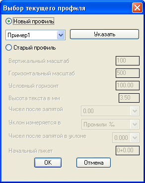
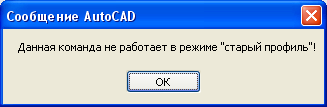

Команда: profile_seleckt_curent_profile
Команда: profile_seleckt_curent_profileЕсли на чертеже присутствует несколько чертежей команда позволяет указать текущий
Команда: profile_seleckt_curent_profile


Внешний вид диалогового окна может различаться если в текущем чертеже присутствует только один профиль (созданый Geo_tools) выпадающий список и кнопка Указать будут не активны - выбирать не из чего всего один профиль. Когда в чертеже не обнаружено ни одного профиля верхняя часть окна отвечающая за выбор профиля будет не активна полностью и принудительно установлен режим Старый профиль. На этот режим можно переключиться в любое время и любом наполнении чертежа.
Разберем подробно сдержимое окна.
Режим Новый профиль соответствует режиму работы с профилями созданными средствами Geo_Tools. Позволяет максимально использовать возможности Geo_Tools - в блоке подвала содержится вся информация о профиле:масштабы настройки строк и их расположения. Если акривны выпадающее окно и кнопка с помощью них можно выбрать текущий профиль. Если ткнуть кнопку Указать
Укажи блок профиля:
 Указывает блок профиля - заголовка подвала.
Указывает блок профиля - заголовка подвала.
В выпадающем списке перечислены имена профилей в текущем чертеже.
Режим Старый профиль предназначен для тех у кого имеется богатый багаж профилей построеных в ручную или другими средствами. Можно использовать большенство средств Geo_Tools для их редактирования и дооформления.
Перечислять настройки режима не вижу смысла у каждой "говорящие" названия.
Особенность режима в том что часть кнопок для работы с профилем откажется работать это: Редактировать параметры текущего профиля, Добавить линию на профиль, Добавить точку на профиль, Добавить пересечку на профиль, Найти точку профиля на плане. То есть все то что используется для переноса данных с плана на профиль.
У других: Вычислить линию на профиле, Нанести измерение на профиле, Определить отметку на профиле и частично Вынести отметку на профиль изменится запросы у пользователя: так как команды теперь не знают где условный горизонт, какую строку будут заполнять и ее габариты, параметры строки (отметки или длины/уклоны, верх и низ строки) запрашиваются у пользователя вместе с точкой на условном горизонте.
У остальных: Измерить превышение, расстояние и уклон, Отложить превышение или уклон с расстоянием, Срез пересекаемой профилем комуникации поменяется только - строка сообщающая о имени текущего профиля она будет заменена на параметры текущего профиля.
Резюме: режим старый профиль рассматривать не как альтернативу новому, а как возможность, не сильно затрудняясь, подправить свой старый профиль или "поковыряться" в пришедшем со стороны.
Напомню, что горизонтальный масштаб (в любом масштабе профиля) должен быть 1:1 с планом.